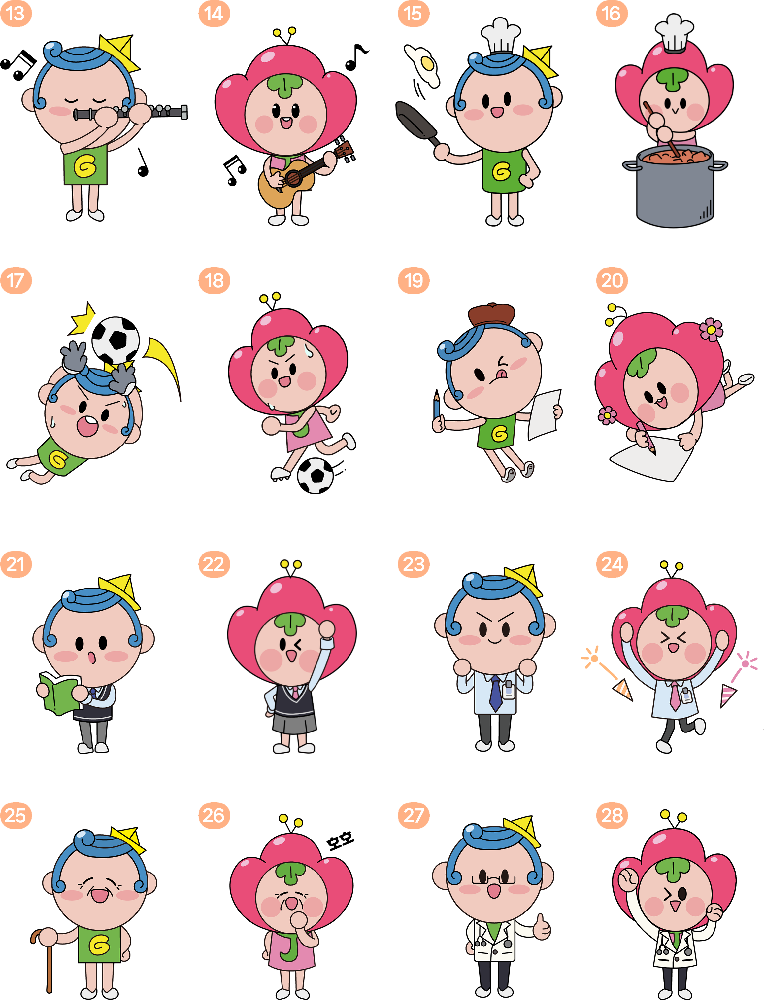
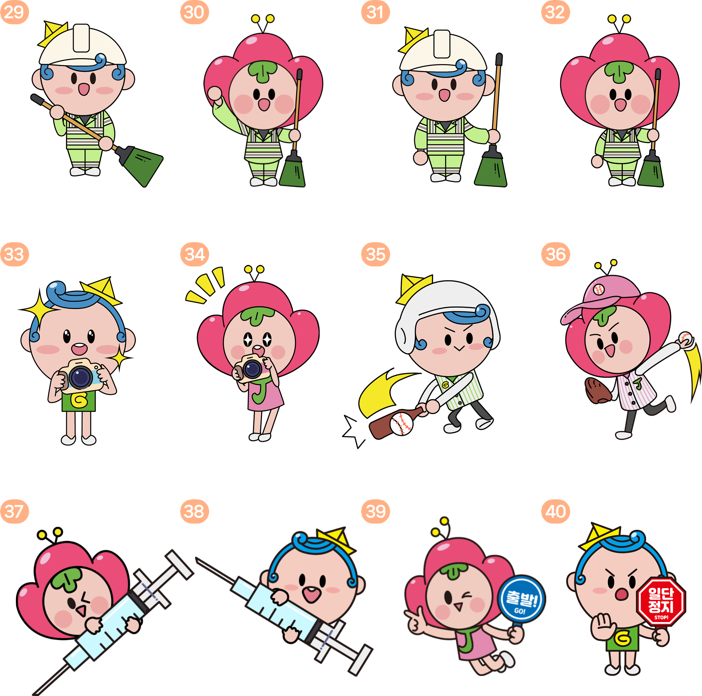

2022 · 캐릭터 응용 일러스트
광이·진이 캐릭터 응용동작
기존 공식 캐릭터인 광이·진이를 여러 상황과 직업에 맞는 동작으로 확장했습니다.
광진구 공식 캐릭터 광이·진이를 활용해 직접 제작한 응용동작 40종입니다. 동작 번호는 2022년 포트폴리오의 표기를 따릅니다.
응용동작 01~12
독서·우편·영유아·요리·미용 등 상황별 표현입니다.

응용동작 13~28
상황에 맞춘 표정과 소품, 의상을 적용했습니다.

응용동작 29~40
